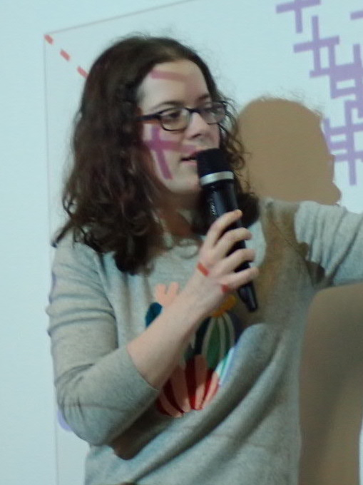

Eloïse Berthier
|  | BrieflySince November 2022, I am a part-time researcher at ENSTA Paris, at Unité d'Informatique et d'Ingénierie des Systèmes (U2IS). From September 2019 to October 2022, I was a Ph.D. student under the supervision of Francis Bach. I have worked in the SIERRA team in Paris, which is a joint team between Inria Paris, ENS Paris and CNRS. My research focused on developing efficient algorithms for optimal control and reinforcement learning, with a particular interest in methods which can be applied to robotics, and which come with theoretical guarantees. Before that, I have worked in the MLO team, under the supervision of Martin Jaggi, on privacy-preserving machine learning. Contact
|

Thesis defense!
I have defended my thesis on Thursday, October 27th 2022, at Inria Paris. You can download the manuscript. You can also have a look at the slides.
Recent Publications and Preprints
E. Berthier, Z. Kobeissi, F. Bach. A Non-asymptotic Analysis of Non-parametric Temporal-Difference Learning. Advances in Neural Information Processing Systems (NeurIPS), 2022.
[hal, poster, slides] [Show Abstract]Abstract: Temporal-difference learning is a popular algorithm for policy evaluation. In this paper, we study the convergence of the regularized non-parametric TD(0) algorithm, in both the independent and Markovian observation settings. In particular, when TD is performed in a universal reproducing kernel Hilbert space (RKHS), we prove convergence of the averaged iterates to the optimal value function, even when it does not belong to the RKHS. We provide explicit convergence rates that depend on a source condition relating the regularity of the optimal value function to the RKHS. We illustrate this convergence numerically on a simple continuous-state Markov reward process.
E. Berthier, J. Carpentier, A. Rudi, F. Bach. Infinite-Dimensional Sums-of-Squares for Optimal Control. Conference on Decision and Control (CDC), 2022.
[hal, poster, slides] [Show Abstract]Abstract: We introduce an approximation method to solve an optimal control problem via the Lagrange dual of its weak formulation. It is based on a sum-of-squares representation of the Hamiltonian, and extends a previous method from polynomial optimization to the generic case of smooth problems. Such a representation is infinite-dimensional and relies on a particular space of functions-a reproducing kernel Hilbert space-chosen to fit the structure of the control problem. After subsampling, it leads to a practical method that amounts to solving a semi-definite program. We illustrate our approach by a numerical application on a simple low-dimensional control problem.
E. Berthier, J. Carpentier, F. Bach. Fast and Robust Stability Region Estimation for Nonlinear Dynamical Systems. 2021 European Control Conference (ECC), 2021.
[hal, slides] [Show Abstract]Abstract: A linear quadratic regulator can stabilize a nonlinear dynamical system with a local feedback controller around a linearization point, while minimizing a given performance criteria. An important practical problem is to estimate the region of attraction of such a controller, that is, the region around this point where the controller is certified to be valid. This is especially important in the context of highly nonlinear dynamical systems. In this paper, we propose two stability certificates that are fast to compute and robust when the first, or second derivatives of the system dynamics are bounded. Associated with an efficient oracle to compute these bounds, this provides a simple stability region estimation algorithm compared to classic approaches of the state of the art. We experimentally validate that it can be applied to both polynomial and non-polynomial systems of various dimensions, including standard robotic systems, for estimating region of attractions around equilibrium points, as well as for trajectory tracking.
E. Berthier, F. Bach. Max-Plus Linear Approximations for Deterministic Continuous-State Markov Decision Processes. IEEE Control Systems Letters, 4(3):767-772, 2020.
[hal, journal, slides] [Show Abstract]Abstract: We consider deterministic continuous-state Markov decision processes (MDPs). We apply a max-plus linear method to approximate the value function with a specific dictionary of functions that leads to an adequate state-discretization of the MDP. This is more efficient than a direct discretization of the state space, typically intractable in high dimension. We propose a simple strategy to adapt the discretization to a problem instance, thus mitigating the curse of dimensionality. We provide numerical examples showing that the method works well on simple MDPs.